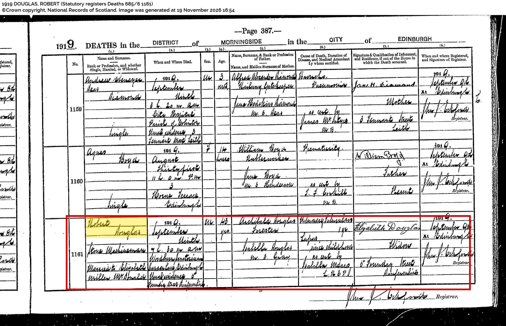

Death of Robert Douglas, Edinburgh, 1919
Statutory register of deaths, District of Morningside, City of Edinburgh, 1919, page 387, entry 1161 (685/6 1161). National Records of Scotland.

The entry is boxed in red and the names are highlighted. See the full page.
What it says
- Name: Robert Douglas, stone machineman, married to Elizabeth Millar McDonald.
- Died: September 9, 1919, 7:30 a.m., Woodburn Sanatorium, Canaan Lane, Edinburgh. Usual residence 5 Foundry Street, Dunfermline.
- Age: 43. Father Archibald Douglas, forester; mother Isabella Douglas, maiden surname Gray.
- Cause: pulmonary tuberculosis, and lupus since childhood.
- Informant: Elizabeth Douglas, widow, 5 Foundry Street, Dunfermline.
Why it matters
The man who raised Laurence died when Laurence was twelve. The address, 5 Foundry Street, Dunfermline, is the same home given for Laurence on his school register.
Crown copyright, National Records of Scotland. Image from ScotlandsPeople.